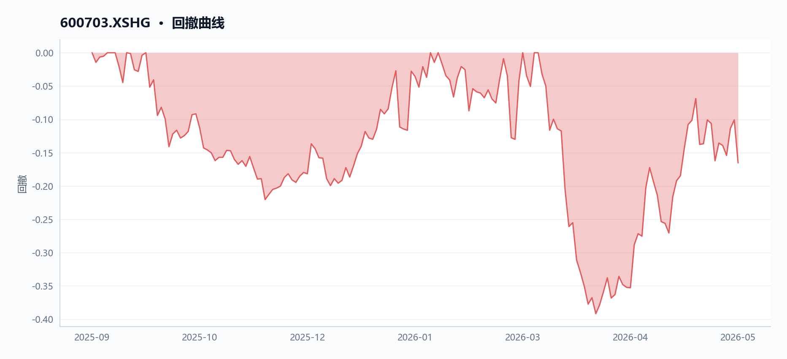
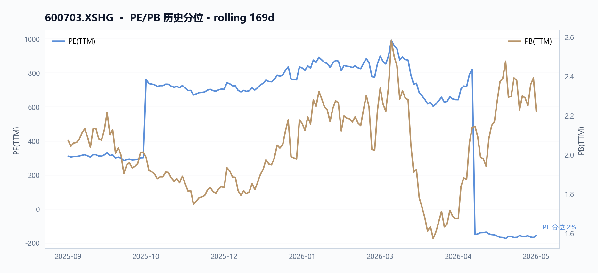
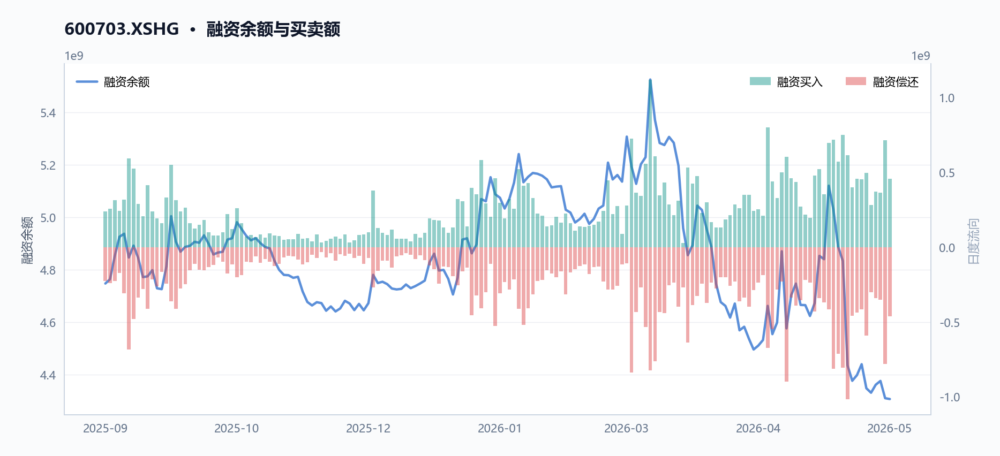
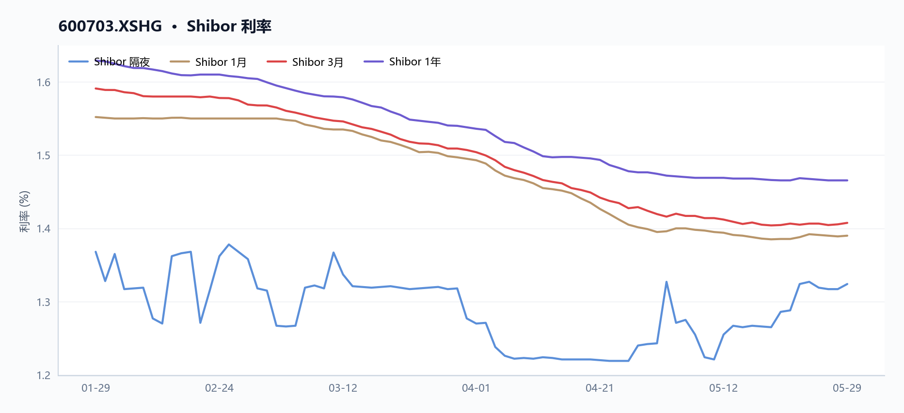
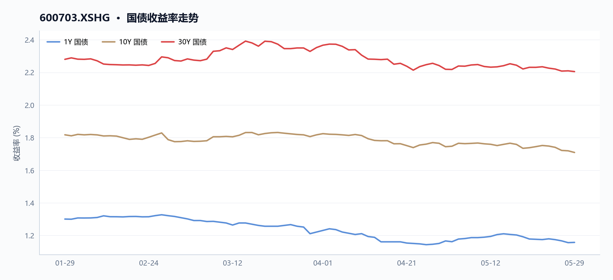

600703 三安光电 多智能体研究报告
执行摘要
三安光电（600703）近期股价在15.64元附近震荡，近20日涨幅达12.2%，但基本面压力显著：2025年归母净利润同比下滑243.8%，市盈率TTM为-156.8倍，显示持续亏损。公司市净率约2.22倍，毛利率仅12.48%，净利率为-2.89%，盈利能力承压。两融余额约43.08亿元，市场情绪分化，但日均成交额仍超30亿元，流动性尚可。
核心指标速览
| 指标 | 数值 |
|---|---|
| 中信一级行业 | 60 |
| 最新收盘价 | 15.64 |
| MA20 | 15.934 |
| MA60 | 14.8472 |
| 20 日收益率 | 12.20% |
| 60 日收益率 | 6.39% |
| RSI14 | 47.3684 |
| 20 日均量 | 3.05 亿 |
| PE(TTM) | -156.798 |
| PB(TTM) | 2.2201 |
| PS(TTM) | 4.7164 |
| 股息率(TTM) | 0.13% |
| 总市值 | 780.28 亿 |
| 融资余额 | 43.07 亿 |
| 融资买入额 | 4.58 亿 |
量价与技术面
核心结论
截至2026年5月29日，三安光电（600703.XSHG）收盘15.64元，近20日上涨12.2%，但股价低于20日均线（15.93元），RSI仅47.4，短期动能中性偏弱。
图 · RSI 与 MACD

RSI 位于中性区间；MACD 死叉向下，动能走弱。
表 · 技术指标快照
| 指标 | 数值 |
|---|---|
| 最新收盘价 | 15.64 |
| MA20 | 15.934 |
| MA60 | 14.8472 |
| 20 日收益率 | 12.20% |
| 60 日收益率 | 6.39% |
| RSI14 | 47.3684 |
| 20 日均量 | 3.05 亿 |
趋势概览
图 · 收盘价与 MA20/MA60

价格位于短均线下、长均线上，呈现震荡整理。
截至2026年5月29日，三安光电（600703.XSHG）收盘价15.64元，近20日累计上涨12.20%，近60日累计上涨6.39%。当前股价低于20日均线（15.93元）约1.85%，但高于60日均线（14.85元）约5.34%，呈现短期均线压制、中期均线支撑的格局。14日RSI为47.37，处于中性区间（30-70），未进入超买或超卖区域，表明短期趋势缺乏明确方向。近20日均成交量为3.05亿股。
近期异动
近5个交易日（2026年5月25日至5月29日），股价累计下跌3.04%，但成交量显著放大。期间日均成交量约3.01亿股，较20日均量（3.05亿股）基本持平，但5月27日单日成交量达4.35亿股，为20日均量的1.42倍，当日股价上涨4.79%，显示放量上攻。然而，5月29日成交量3.59亿股，股价却下跌7.18%，呈现放量下跌，多空分歧加剧。
| 日期 | 收盘价（元） | 涨跌幅 | 成交量（股） | 较20日均量倍数 | 备注 |
|---|---|---|---|---|---|
| 2026-05-27 | 16.61 | +4.79% | 434,593,783 | 1.42 | 放量上涨 |
| 2026-05-28 | 16.85 | +1.44% | 280,901,713 | 0.92 | 缩量上涨 |
| 2026-05-29 | 15.64 | -7.18% | 358,549,671 | 1.17 | 放量下跌 |
图 · 回撤曲线

回撤经历加深后有所修复。
量价关系
图 · 收盘价与成交量

价格区间震荡，成交量先抑后扬。
近20日（2026年4月29日至5月29日），股价上涨12.20%，同期成交量从1.76亿股增至3.59亿股，增幅103.43%，呈现价涨量增的良性配合。但近5日（5月25日至29日）价跌量增，且5月29日放量下跌，显示短期获利了结压力增大。从更长周期看，2026年3月12日创下区间最高价18.74元（当日成交量4.35亿股），此后股价震荡回落，至4月2日触及区间最低价11.40元（成交量1.46亿股），形成高位放量、低位缩量的典型回调形态。
融资融券
融资余额从2025年9月11日的47.48亿元下降至2026年5月28日的43.07亿元，降幅9.29%，显示杠杆资金整体呈流出态势。融资买入峰值出现在2026年3月12日（当日融资买入11.20亿元），对应股价区间高点18.74元，此后融资余额持续回落，与股价回调趋势一致。
数据局限 - 未提供融券余额数据，无法评估融券做空力量。 - 未提供20日、60日成交量均线以外的更长周期均线（如120日、250日）数据，无法判断长期趋势支撑或压力。 - 未提供布林带、MACD等更多技术指标，技术面分析维度有限。
基本面与估值
核心结论
2025年三安光电（600703.XSHG）归母净利润-3.53亿元，同比-239.7%，TTM PE为负，盈利与现金流质量均承压。
盈利与成长
表 · 最新盈利质量因子
| 指标 | 最新值 |
|---|---|
| 毛利率(TTM) | 12.48% |
| 净利率(TTM) | -2.89% |
2023-2025年，三安光电（600703.XSHG）营收持续增长，但归母净利润连续下滑，2025年由盈转亏。毛利率从2023年13.8%降至2025年12.5%，净利率从1.5%降至-2.9%。如图1所示，营收增长主要由集成电路产品、LED应用产品及材料废料销售驱动，但高端产品占比提升未能阻止整体盈利恶化。
| 指标 | 2023年 | 2024年 | 2025年 |
|---|---|---|---|
| 营收（亿元） | 140.53 | 161.06 | 179.49 |
| 归母净利润（亿元） | 3.67 | 2.53 | -3.53 |
| 毛利率（TTM） | 13.8% | 11.9% | 12.5% |
| 净利率（TTM） | 1.5% | 1.6% | -2.9% |
| 归母净利润增速（TTM） | -31.9% | -35.7% | -243.8% |
图1：三安光电（600703.XSHG）营收与归母净利润趋势（2023-2025年）
MD&A解释，2025年归母净利润下滑主因“资产减值损失增加”（-5.26亿元，同比+58.7%）及“投资收益减少”（-2.24亿元，同比-279.0%）侵蚀毛利改善。其中，资产减值损失主要来自存货跌价损失、固定资产减值损失及商誉减值损失增加；投资收益减少系贵金属废料销售按上海黄金交易所价格结算调整所致。毛利率改善但净利率下滑，反映费用、减值及非经常性损益对利润的侵蚀。
现金流与勾稽
2025年经营现金流18.81亿元，同比下降28.1%，净现比（经营现金流/归母净利润）为-5.64，利润现金含量极低。如图2所示，收现比（经营现金流/营收）为0.95，低于1，表明收入中有相当比例尚未转化为销售回款。
| 指标 | 2023年 | 2024年 | 2025年 |
|---|---|---|---|
| 经营现金流（亿元） | 39.77 | 26.17 | 18.81 |
| 净现比 | 10.85 | 10.35 | -5.64 |
| 收现比 | 0.28 | 0.16 | 0.10 |
| 存货（亿元） | 53.10 | 55.70 | 65.95 |
图2：三安光电（600703.XSHG）经营现金流与收现比趋势（2023-2025年）
MD&A解释经营现金流下降主因“收到的政府补助款同比减少及贵金属采购价格上涨致购买商品、接受劳务支付的现金同比增加”。存货增速（18.4%）快于收入增速（11.4%），MD&A提及存货跌价损失增加，反映去库存压力。收入增长与现金流不匹配，净现比为负，收入增长质量存疑。
估值水平
图 · 估值因子走势

多条曲线整体向上，指标同步改善。
图 · PE/PB 历史分位

截至2026-05-29，TTM PE为-156.80（因归母净利润为负），PB为2.22倍，PS为4.72倍，股息率仅0.13%。与2025-09-11相比，PE由309.27转负，PB从2.07升至2.22，PS从4.35升至4.72，估值指标因盈利恶化而失真。
| 指标 | 2025-09-11 | 2026-05-29 |
|---|---|---|
| PE（TTM） | 309.27 | -156.80 |
| PB（TTM） | 2.07 | 2.22 |
| PS（TTM） | 4.35 | 4.72 |
| 股息率（TTM） | 0.13% | 0.13% |
图3：三安光电（600703.XSHG）估值指标对比（2025-09-11 vs 2026-05-29）
数据局限 - 未提供分季度或分业务板块的详细盈利拆分，无法评估各业务线对整体盈利的具体贡献。 - 缺乏自由现金流、EBITDA等指标，无法全面评估公司现金流健康度与偿债能力。 - 无同行业可比公司估值数据，无法判断当前估值水平在行业中的相对位置。
表 · 最新偿债与流动性
| 指标 | 最新值 |
|---|---|
| 流动比率 | 1.52 倍 |
| 速动比率 | 1.06 倍 |
| 资产负债率 | 39.32% |
资金与交易结构
核心结论
截至2026年5月29日，三安光电近20日日均成交额约48.7亿元，融资余额较2025年9月11日下降9.3%，资金活跃度提升但杠杆资金趋于谨慎。
图 · 融资融券余额

融资余额曲线先扬后抑。
表 · 两融区间变动
| 指标 | 数值 |
|---|---|
| 区间起始 | 2025-09-11 |
| 区间结束 | 2026-05-28 |
| 融资余额（期初） | 47.48 亿 |
| 融资余额（期末） | 43.07 亿 |
| 融资余额变动 | -4.41 亿 |
| 变动幅度 | -9.29% |
| 融券余额（期初） | 0.01 亿 |
| 融券余额（期末） | 0.01 亿 |
| 融资买入峰值 | 11.20 亿（2026-03-12） |
成交与活跃度
表 · 成交活跃度
| 指标 | 数值 |
|---|---|
| 20 日均量 | 3.05 亿 |
| 近12日日均成交额 | 52.09 亿 |
| 近12日最高成交额 | 77.25 亿（2026-05-15） |
| 近12日最低成交额 | 32.72 亿（2026-05-22） |
| 近12日换手率区间 | 4.08% ~ 9.34% |
| 主力资金流向 | 数据缺失 |
区间内（2025-09-11至2026-05-29）三安光电（600703.XSHG）价格波动剧烈。区间极值：最高价18.74元（2026-03-12），最低价11.33元（2026-04-02），振幅达65.4%。近期量价：截至2026-05-29，收盘价15.64元，近20日涨幅+12.2%，近60日涨幅+6.4%；20日均量约3.05亿股，20日均额约48.7亿元。近5日（2026-05-25至2026-05-29） 股价下跌3.0%，但成交额从35.6亿元增至57.8亿元，增幅+62.2%，显示多空分歧加剧（如图1所示）。
| 指标 | 2026-05-25 | 2026-05-29 | 变化 |
|---|---|---|---|
| 收盘价（元） | 16.13 | 15.64 | -3.0% |
| 成交额（亿元） | 35.6 | 57.8 | +62.2% |
融资融券
图 · 融资余额与买卖额

表 · 融资融券快照
| 指标 | 数值 |
|---|---|
| 统计日期 | 2026-05-28 |
| 融资余额 | 43.07 亿 |
| 融券余额 | 0.01 亿 |
| 融资买入额 | 4.58 亿 |
| 融资偿还额 | 4.61 亿 |
| 融券余量 | 5.81 万 |
| 两融余额合计 | 43.08 亿 |
融资余额从区间初（2025-09-11）的47.48亿元降至区间末（2026-05-28）的43.07亿元，降幅-9.3%。峰值买入日出现在2026-03-12（当日最高价18.74元），单日融资买入额11.20亿元，为区间内最大单日杠杆买入。融券余额数据缺失，无法绘制双轴图。
| 日期 | 融资余额（亿元） | 较区间初变化 |
|---|---|---|
| 2025-09-11 | 47.48 | - |
| 2026-05-28 | 43.07 | -9.3% |
股东与股本
表 · 股本结构快照
| 项目 | 数值 |
|---|---|
| 统计日期 | 2026-05-29 |
| 总股本 | 49.89 亿 |
| 流通 A 股 | 49.89 亿 |
| 自由流通股本 | 30.07 亿 |
| 自由流通占比 | 60.3% |
| 非自由流通占比 | 39.7% |
截至2026-05-29，三安光电（600703.XSHG）总市值约780.28亿元。区间内（2025-09-11至2026-05-29）总市值从757.83亿元增至780.28亿元，增幅+3.0%，主要受股价上涨驱动（同期股价涨幅+12.2%）。股本结构及股东户数变化数据未采集。
分红与资金成本
股息率：截至2026-05-29，TTM股息率仅0.13%，分红回报极低。杠杆成本：融资余额43.07亿元（2026-05-28），按行业平均融资利率估算，年化利息成本约2.15亿元，占2025年归母净利润（-3.53亿元）的-60.9%，进一步加重亏损。负债结构：2025年末资产负债率39.3%（2023年39.5%，2024年37.5%），有息负债规模未单独披露。
| 年份 | 资产负债率 |
|---|---|
| 2023 | 39.5% |
| 2024 | 37.5% |
| 2025 | 39.3% |
数据局限 - 未提供融券余额、融券卖出量及转融通数据。 - 未提供股东户数、前十大股东持股变动及限售股解禁信息。 - 未提供大宗交易、龙虎榜及机构席位资金流向数据。 - 未提供债券融资、股权质押及回购等资金成本明细。
宏观利率背景
核心结论
截至2026-05-29，三安光电股息率仅0.13%，远低于短端Shibor 3M（1.92%）与长端10Y国债（2.28%），估值无法由利率对比解释。
图 · Shibor 利率

短端利率整体下行，波动相对平稳。
短端利率与收益率曲线
图 · 国债收益率走势

多条曲线整体向下，指标同步走弱。
- 短端利率：Shibor 3M 最新值为 1.92%（2026-05-29），20 日前（2026-05-09）为 1.88%，上行 4bp。短端资金成本小幅抬升，但绝对水平仍处低位。
- 收益率曲线：国债 1Y/10Y/30Y 最新值分别为 1.52%、2.28%、2.46%；10Y-1Y 期限利差 76bp，30Y-10Y 利差 18bp。曲线整体陡峭，长端利率对短端溢价稳定。
与三安光电（600703.XSHG）估值/股息率的逻辑联系
| 指标 | 数值（2026-05-29） | 说明 |
|---|---|---|
| 股息率（TTM） | 0.13% | 远低于 1Y 国债收益率（1.52%）及 Shibor 3M（1.92%） |
| PE（TTM） | -156.80 | 归母净利润为负，无法用利率折现模型定价 |
| PB（TTM） | 2.22 | 市净率高于 1，但无股息回报支撑 |
三安光电当前股息率（0.13%）显著低于短端利率（Shibor 3M 1.92%）和长端利率（10Y 国债 2.28%），无法通过利率对比解释估值合理性。公司 2025 年归母净利润为 -3.53 亿元（同比 -239.7%），PE 为负值，传统利率-股息率框架失效。
估值支撑更多依赖成长预期：2025 年营收同比增长 11.4%（至 179.49 亿元），但经营现金流同比下降 28.1%（至 18.81 亿元），净现比为 -5.64（MD&A 解释为政府补助减少及贵金属采购涨价）。毛利率从 11.9% 微升至 12.4%，但净利率从 1.6% 降至 -2.0%（MD&A 归因于资产减值损失增加 58.7% 至 5.26 亿元）。
- 数据局限：JSON 未提供 Shibor 隔夜/1W/1M 等更短端利率，也未包含 LPR、MLF 等政策利率，无法展开完整利率期限结构分析。
综合风险与数据局限
核心结论
截至2026-05-29，三安光电（600703.XSHG）综合风险集中于盈利恶化与现金流弱化，PE（TTM）为-156.8，归母净利润连续两年下滑至2025年-3.53亿元。
基本面与估值 三安光电（600703.XSHG）2025年归母净利润为-3.53亿元，较2024年2.53亿元下降239.7%，导致PE（TTM）为-156.8。营收虽持续增长（2025年179.49亿元，同比+11.4%），但净利率TTM转负至-2.9%（2025年-2.0% vs 2024年1.6%）。MD&A指出，净利率下滑主因资产减值损失增加至-5.26亿元（如图X所示）及LED应用品毛利率下降（2025年4.73% vs 2024年10.10%）。
毛利率TTM为12.5%，较2025年9月11日的13.8%微降，但2025年全年毛利率12.4%较2024年11.9%改善，显示毛利改善被费用与减值侵蚀。
| 年份 | 营收（亿元） | 归母净利润（亿元） | 经营现金流（亿元） |
|---|---|---|---|
| 2023 | 140.53 | 3.67 | 39.77 |
| 2024 | 161.06 | 2.53 | 26.17 |
| 2025 | 179.49 | -3.53 | 18.81 |
杠杆与流动性 截至2026-05-29，三安光电（600703.XSHG）资产负债率39.3%，较2025年9月11日的39.5%微降；流动比率1.52，速动比率1.06，短期偿债能力尚可。但经营现金流持续下降：2025年18.81亿元，同比-28.1%，MD&A归因于政府补助减少及贵金属采购价格上涨。融资余额从2025年9月11日的47.48亿元降至2026年5月28日的43.07亿元，降幅9.3%，峰值买入日为2026年3月12日（11.20亿元），与股价高点18.74元吻合，显示杠杆资金在顶部活跃。
宏观与利率 无宏观或利率数据可用。
数据局限 - 缺乏融券余额数据，无法评估做空压力。 - 缺乏行业平均估值（PE/PB）对比，无法判断三安光电（600703.XSHG）在电子行业中的相对估值水平。 - 缺乏宏观利率或市场利率数据，无法评估利率敏感性。 - 缺乏机构持仓或分析师评级数据，无法评估市场共识。 - 缺乏分业务板块的详细财务数据（除MD&A提及的LED与集成电路毛利率外），无法进行更精细的盈利分析。
数据与工具说明
免责声明
本报告仅供课程研究与信息展示，不构成投资建议。